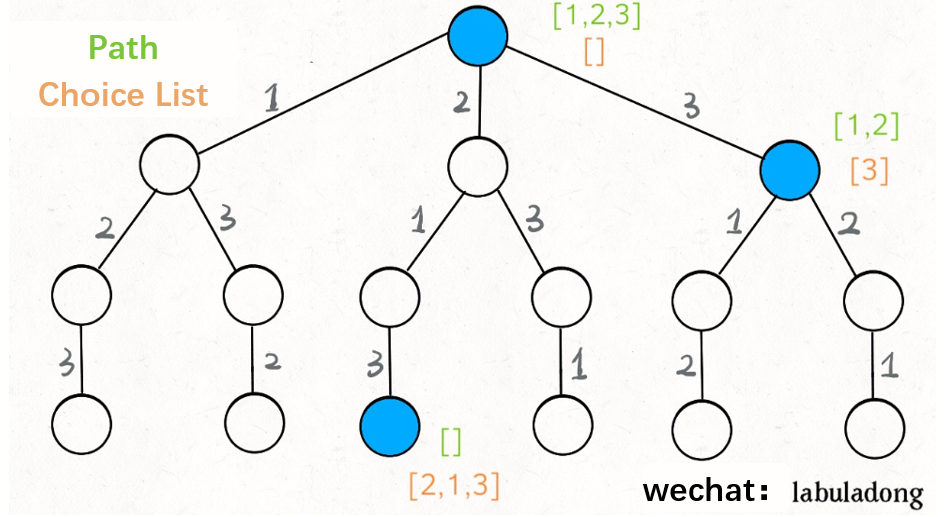

Este o metodă ”constructivă”, la fel ca Metoda Greedy, dar spre deosebire de aceasta, are proprietatea de a reveni asupar valorilor nealese.Aceasta metoda se aplică numai atunci cînd nu există o altă cale de rezolvare a problemei propuse, deoarece timpul de execuție este de ordin exponențial (crește exponențial o dată cu dimensiunea datelor de intrare ), rezolvarea problemei, chiar pe un calculator rapid, poate dura foarte mult.
Metoda backtracking poate fi implementată iterativ sau recursiv. În ambele situații se se folosește o structură de deate de tip stivă. În cazul implementării iterative, stiva trebuie gestionată intern în algoritm – ceea ce poate duce la dificulăți în implementăre. În cazul implementării recursive se folosește spațiu de memorie de tip stivă – STACK alocat programului; implementarea recursivă este de regulă mai scurtă și mai ușor de înțeles.
Daca in procesul de generare al unui vector solutie S=x1*x2....*xn pentru componenta k, atunci cand am generat deja x1, x2,...xn constatam ca valoarea xk nu este bine aleasa, nu trecem la componenta k+1, ci reluam cautarea pentru alta valoare a lui k, iar daca aceasta valoare nu exista => reluam cautarea pentru componenta k-1.
